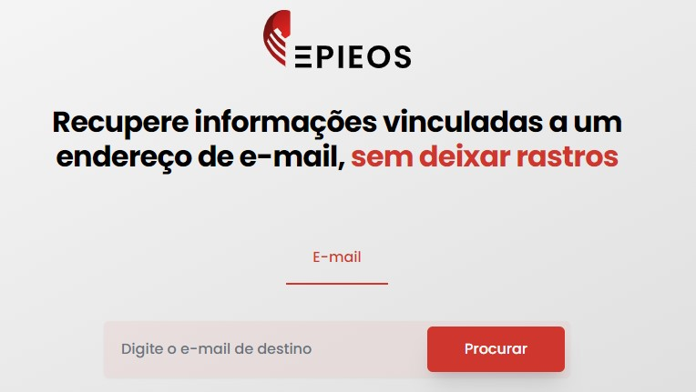
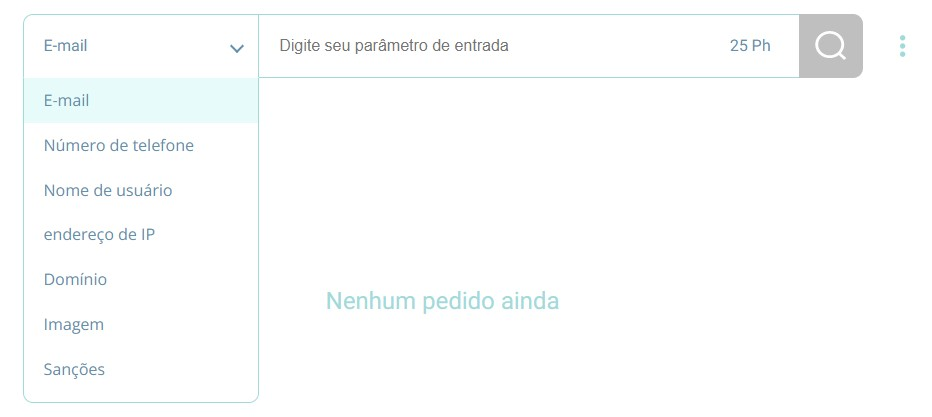
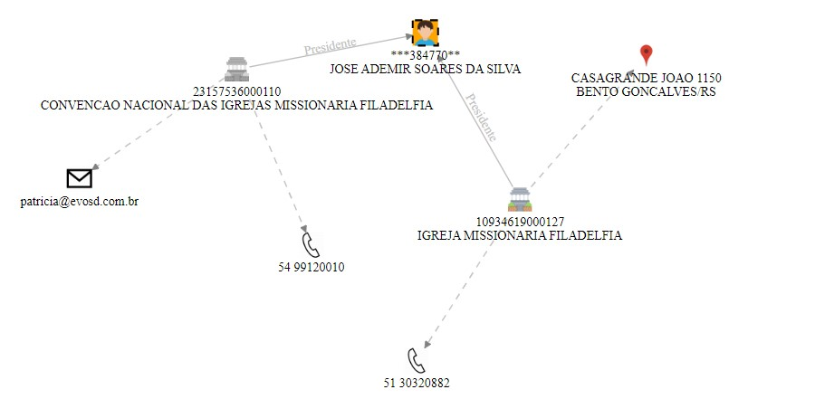
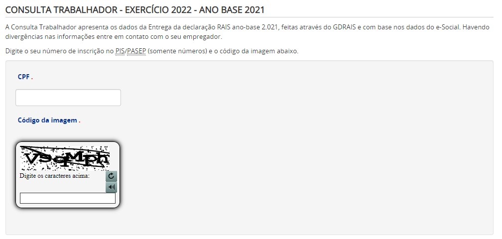
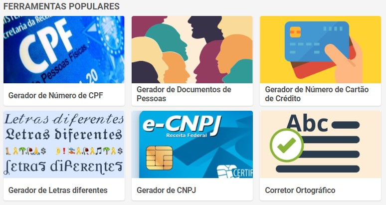
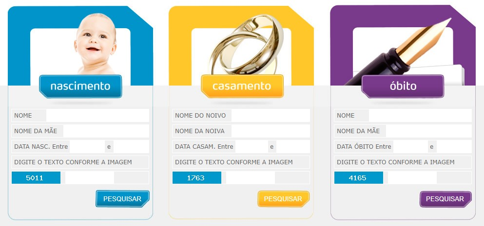
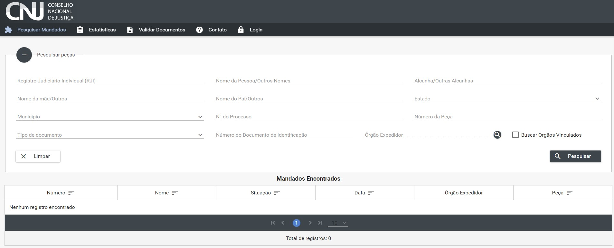

BUSCA DE DADOS EM FONTES ABERTAS
Nesta página você encontra ferramentas que podem te auxiliar na busca de dados em fontes abertas.
Informamos que não nos responsabilizamos pelos links externos divulgados nesta página, pois não
temos controle sobre eles.
Nosso objetivo é reunir e divulgar em um único local as melhores ferramentas de busca de dados
com acesso livre para nossos usuários.
Aqui o usuário poderá encontrar links para realizar buscas relacionadas a:
- Telefone
- CNPJ
- Sites que te auxiliam na criação de um Assistente Virtual de Investigação (AVI)
- Buscar dados referentes a vínculo empregatício
- Sites geradores de CPFs, RGs, NOMES e etc.
- Certidões
TELEFONE
www.truecaller.com.br
Nesse site é possível identificar o proprietário de um número de telefone. Para acessar o site, é necessário fazer login, porém, destacamos que o usuário realize login com um AVI (conta fake), pois ao acessar, você fornece ao site todos os seus contatos registrados na sua conta. É desta forma que o site trabalha, a cada consulta realizada, ele baixa a lista de contatos da pessoa que consultou.
www.epieos.com
Acessando o link você terá acesso a um campo para digitar um endereço de e-mail válido. Após preencher, o site irá retornar alguns resultados, como a foto do Gmail caso a pessoa já tenho contribuído com avaliações no google maps, porém, para ter acesso completo as informações, é necessário se cadastrar e assinar algum plano disponível no site.
Epieos é uma empresa com mais de 10 anos de experiência, fornecem serviços de investigação, além de software para organizações e indivíduos. Facilitam a coleta e análise de informações de código aberto. É um site que está hospedado na Europa e informam que não registram nenhuma pesquisa realizada no site.

www.lampyre.io
Site completo para realização de busca de dados pessoais, o usuário seleciona o dado que tem disponível para informar e realiza a busca, porém não é gratuíto, cada pesquisa custa um euro, mas tem os planos mensais e anuais que são acessíveis.

CNPJ
www.redecnpj.com.br
Neste site é possível, através do número do número do CNPJ, nome fantasia da empresa, nome do proprietário ou até mesmo dos sócios, além de outras opções, buscar dados e fazer vínculos com outras informações que o site disponibiliza. A base de dados tem cerca de 53 milhões de empresas. Todos os dados exibidos são públicos, provenientes da Receita Federal.
Ao acessar o site, você recebrá uma mensagem contendo instruções de como utilizá-lo, de primeiro momento o site parece complexo, devido a sua quantidade de dados e possibilidades de relações que se pode fazer.

AVI
www.thispersondoesnotexist.com
Este site te ajuda a construir um AVI (Assistente Virtual de Investigação), conhecido também como Perfil Fake. Utilize o site para baixar fotos de pessoas que não existem sem medo de ser enquadrado no Artº 307 do Código Penal: Atribuir-se ou atribuir a terceiro falsa identidade para obter vantagem, em proveito próprio ou alheio, ou para causar dano a outrem.. O site cria imagens de rostos a cada atualização.
TRABALHADOR
www.rais.gov.br
Site do Ministério do Trabalho e Previdência disponível para consultar relação de CPF/TRABALHADOR. Apenas com o nº do CPF o usuário consegue verificar a empresa em que o alvo trabalha. Os dados são atualizados com as informações do ano anterior, então, podem não estar atualizados. A gestão governamental do setor do trabalho conta com o importante instrumento de coleta de dados denominado Relação Anual de Informações Sociais (RAIS). Ao acessar o site, clique no botão "voltar" ao lado de "sair".

GERADORES
www.4devs.com
Site de geradores, o usuários pode gerar todos os tipos de dados pessoais, desde cartões de crédito à CPF e RG.

CERTIDÕES
www.e-certidoes.com.br
Neste site, com algumas informações iniciais, é possível consultar certidões de nascimento, casamento e óbito.

Mandado de Prisão
www.portalbnmp.cnj.jus.br
Site do Conselho Nacional de justiça, preeenchendo algumas informações iniciais é possível verificar se o alvo possui ou não mandado de Prisão em seu desfavor. Além do campo "Estatísticas", que se pode verificar a quantidade de foragidos e procurados no Estado do Paraná.
